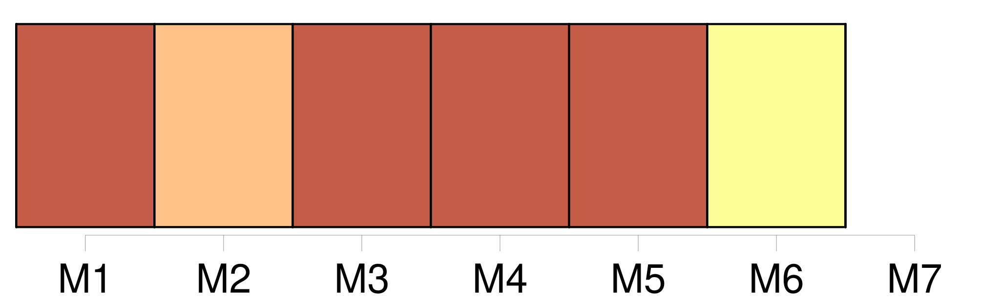

Longueur nb maillons : 6 mentions |
 |
Je levai par hasard [ma tête] , [que] j’ avais jusque -là tenue inclinée, et j’ aperçus devant moi, si près que j’ aurais pu la toucher, quoique en réalité elle fût à une assez grande distance et de l’ autre côté de la balustrade, une jeune femme d’ une beauté rare et vêtue avec une magnificence royale. [46 phrases]
— Pour moi, livide, le front inondé d’ une sueur plus sanglante que celle du Calvaire, je me dirigeai en chancelant vers la porte de l’ église ; j’ étouffais ; les voûtes s’ aplatissaient sur mes épaules, et il me semblait que [ma tête] soutenait seule tout le poids de la coupole. [43 phrases]
— J’ eus honte de moi -même, et, laissant tomber [ma tête] sur ma poitrine, je voilai mes yeux avec mes mains. [360 phrases] Je me sentais perler sur les membres une sueur glaciale, et mes cheveux se redressaient douloureusement sur [ma tête] ; je regardais au fond de moi -même l’ action du sévère Sérapion comme un abominable sacrilège, et j’ aurais voulu que du flanc des sombres nuages qui roulaient pesamment au-dessus de nous sortît un triangle de feu qui le réduisît en poudre. [8 phrases] » Je baissai [la tête] ; une grande ruine venait de se faire au dedans de moi. |

|
Il est possible de télécharger la ressource sur la page Ortolang |
Si vous avez des questions ou vous voyez des erreurs, merci d'envoyer un mail à silvia.federzoni89@gmail.com |